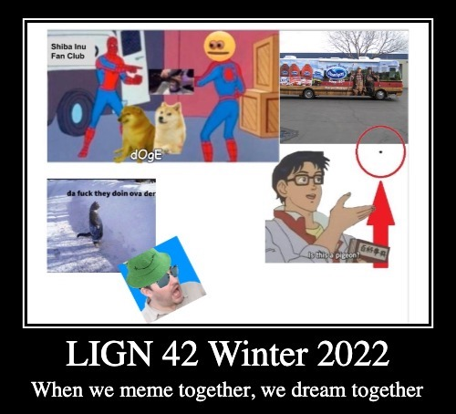
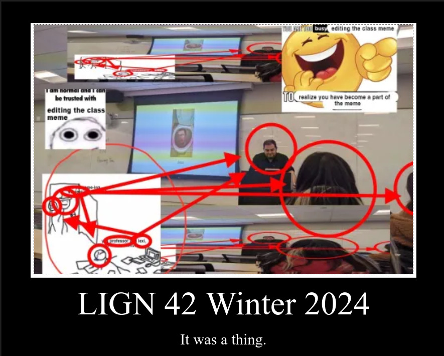

<section class="clicker"></section> ### This class was... A: Acidified B: --- C: Neutral D: --- E: Based --- # Linguistics of Memes ### Will Styler - LIGN 42 --- ### Today's Plan - Administrative Notes - Course Feedback - What have we learned? - Looking forward - Thank you --- ## Administrative Notes --- ### Your final project is due on March 20th at Noon - You'll submit it on Canvas, choose one group member to submit it - Late projects are penalized at 30% per day without good cause - Don't forget to fill out the self-grading rubric cover page - If you're doing a video/website/etc, this is the only thing you'll upload, and include a link --- ### Participation grades will go up shortly - All other grades will be finalized soon --- ## What have we learned? --- ### It's always helpful to look back as a way of summarizing a long quarter's worth of work - To contemplate just how far we've come --- ### What have we learned about memes? --- ### What have we learned about the internet? --- ### What have we learned about language and linguistic analysis? --- ### What's the most important thing you learned? --- ## What does the future hold? --- ### How do you think memes will change in the future? - Formats? - Topics? - Morphology? - What will be *timeless*? - (Unlike Will's memes) --- ### How do you think language on the internet will change? --- ## The Class Meme --- ### 2022's Class Meme  --- Drum roll please.... ---  --- ## A Final Thank you --- ### This class and group has been the best I could've hoped for this new format - You've been kind to each other and to me - You've worked together, and found common ground with relative ease - You've engaged with the questions, and made this class more than just a meme --- ### I've learned an incredible amount from you all! - You've helped me better understand how a shifting medium has shifted - You've helped me to confirm many ideas I had about the linguistics of memes - You've shared elements of the meme world that I never, ever would've found on my own - I can now have a bias in Floptropica while watching Sylvanian Drama and maining Articuno 🗿 - I will never be able to say "That's a thing" without laughing internally --- ### You've also challenged me - You've highlighted places where my understanding is not accurate (anymore?) - Teaching this material has forced me to grow and innovate as a teacher - You've made me expand my cultural and memetic sphere of understanding - I aged more on Wednesday than I had in every year prior --- ### You have forever shaped this course - I appreciate you all, and will likely always appreciate you all, whenever I teach this course - I will be thrilled if my next group of students is as kind, fun, participatory, and excellent as you all are - I've learned a great deal, and the next course will be better for your having blazed the trail --- ### I hope you've learned from me too - That some of this will be helpful as you move forward in your life as an online person, a memer, and a language user - I hope that you now understand language better, and will see these facts on both sides of the digital divide - I hope that you've now seen just how weird a college class can be while still talking about important and interesting ideas - ... and if there's one important thing I want you all to take away from this quarter... --- <video data-autoplay="true" src="video/lecturevid.mp4"></video> --- <huge>Thank you</huge>